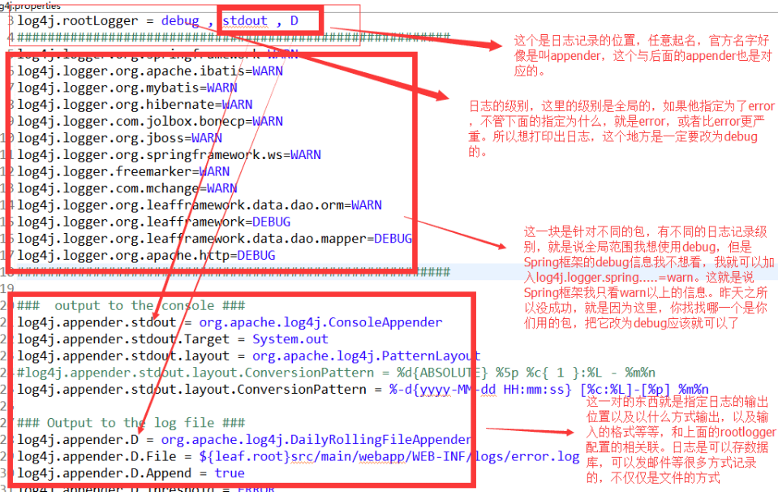

日志是应用软件中不可缺少的部分，Apache的开源项目log4j是一个功能强大的日志组件,提供方便的日志记录。在apache网站：jakarta.apache.org/log4j 可以免费下载到Log4j最新版本的软件包。
入门实例
新建一个JAva工程，导入包log4j，整个工程最终目录如下
src同级创建并设置log4j.properties
### 设置### log4j.rootLogger = debug,stdout,D,E ### 输出信息到控制抬 ### log4j.appender.stdout = org.apache.log4j.ConsoleAppender log4j.appender.stdout.Target = System.out log4j.appender.stdout.layout = org.apache.log4j.PatternLayout log4j.appender.stdout.layout.ConversionPattern = [%-5p] %d{yyyy-MM-dd HH:mm:ss,SSS} method:%l%n%m%n ### 输出DEBUG 级别以上的日志到=E://logs/error.log ### log4j.appender.D = org.apache.log4j.DailyRollingFileAppender log4j.appender.D.File = E://logs/log.log log4j.appender.D.Append = true log4j.appender.D.Threshold = DEBUG log4j.appender.D.layout = org.apache.log4j.PatternLayout log4j.appender.D.layout.ConversionPattern = %-d{yyyy-MM-dd HH:mm:ss} [ %t:%r ] - [ %p ] %m%n ### 输出ERROR 级别以上的日志到=E://logs/error.log ### log4j.appender.E = org.apache.log4j.DailyRollingFileAppender log4j.appender.E.File =E://logs/error.log log4j.appender.E.Append = true log4j.appender.E.Threshold = ERROR log4j.appender.E.layout = org.apache.log4j.PatternLayout log4j.appender.E.layout.ConversionPattern = %-d{yyyy-MM-dd HH:mm:ss} [ %t:%r ] - [ %p ] %m%n设置日志内容
package com.mucfc; import org.apache.log4j.Logger; /** *@author zhangkx *@2020年5月1日9:14:21 */ public class Test { private static Logger logger = Logger.getLogger(Test.class); /** * @param args */ public static void main(String[] args) { // System.out.println("This is println message."); // 记录debug级别的信息 logger.debug("This is debug message."); // 记录info级别的信息 logger.info("This is info message."); // 记录error级别的信息 logger.error("This is error message."); } }此时 控制台和文件都有输出结果了

Log4j基本使用方法
Log4j由三个重要的组件构成：日志信息的优先级，日志信息的输出目的地，日志信息的输出格式。日志信息的优先级从高到低有ERROR、WARN、 INFO、DEBUG，分别用来指定这条日志信息的重要程度；日志信息的输出目的地指定了日志将打印到控制台还是文件中；而输出格式则控制了日志信息的显示内容。
定义配置文件
其实你也可以完全不使用配置文件，而是在代码中配置Log4j环境。但是，使用配置文件将使您的应用程序更加灵活。Log4j支持两种配置文件格式，一种是XML格式的文件，一种是Java特性文件（键=值）。下面我们介绍使用Java特性文件做为配置文件的方法：
配置根Logger
其语法为：
log4j.rootLogger = [ level ] , appenderName, appenderName, …
其中，level 是日志记录的优先级，分为OFF、FATAL、ERROR、WARN、INFO、DEBUG、ALL或者您定义的级别。Log4j建议只使用四个级别，优 先级从高到低分别是ERROR、WARN、INFO、DEBUG。通过在这里定义的级别，您可以控制到应用程序中相应级别的日志信息的开关。比如在这里定 义了INFO级别，则应用程序中所有DEBUG级别的日志信息将不被打印出来。 appenderName就是指B日志信息输出到哪个地方。您可以同时指定多个输出目的地。
配置日志信息输出目的地Appender
其语法为：
log4j.appender.appenderName = fully.qualified.name.of.appender.class
log4j.appender.appenderName.option1 = value1
…
log4j.appender.appenderName.option = valueN
其中，Log4j提供的appender有以下几种：
org.apache.log4j.ConsoleAppender（控制台），
org.apache.log4j.FileAppender（文件），
org.apache.log4j.DailyRollingFileAppender（每天产生一个日志文件），
org.apache.log4j.RollingFileAppender（文件大小到达指定尺寸的时候产生一个新的文件），
org.apache.log4j.WriterAppender（将日志信息以流格式发送到任意指定的地方）
配置日志信息的格式（布局）
其语法为：
log4j.appender.appenderName.layout = fully.qualified.name.of.layout.class
log4j.appender.appenderName.layout.option1 = value1
…
log4j.appender.appenderName.layout.option = valueN
其中，Log4j提供的layout有以e几种：
org.apache.log4j.HTMLLayout（以HTML表格形式布局），
org.apache.log4j.PatternLayout（可以灵活地指定布局模式），
org.apache.log4j.SimpleLayout（包含日志信息的级别和信息字符串），
org.apache.log4j.TTCCLayout（包含日志产生的时间、线程、类别等等信息）
Log4J采用类似C语言中的printf函数的打印格式格式化日志信息，打印参数如下： %m 输出代码中指定的消息
%p 输出优先级，即DEBUG，INFO，WARN，ERROR，FATAL
%r 输出自应用启动到输出该log信息耗费的毫秒数
%c 输出所属的类目，通常就是所在类的全名
%t 输出产生该日志事件的线程名
%n 输出一个回车换行符，Windows平台为“rn”，Unix平台为“n”
%d 输出日志时间点的日期或时间，默认格式为ISO8601，也可以在其后指定格式，比如：%d{yyy MMM dd HH:mm:ss,SSS}，输出类似：2002年10月18日 22：10：28，921
%l 输出日志事件的发生位置，包括类目名、发生的线程，以及在代码中的行数。举例：Testlog4.main(TestLog4.java:10)
在代码中使用Log4j
1.得到记录器
使用Log4j，第一步就是获取日志记录器，这个记录器将负责控制日志信息。其语法为：
public static Logger getLogger( String name)
通过指定的名字获得记录器，如果必要的话，则为这个名字创建一个新的记录器。Name一般取本类的名字，比如：
static Logger logger = Logger.getLogger ( ServerWithLog4j.class.getName () )
2.读取配置文件
当获得了日志记录器之后，第二步将配置Log4j环境，其语法为：
BasicConfigurator.configure ()： 自动快速地使用缺省Log4j环境。
PropertyConfigurator.configure ( String configFilename) ：读取使用Java的特性文件编写的配置文件。
DOMConfigurator.configure ( String filename ) ：读取XML形式的配置文件。
3.插入记录信息（格式化日志信息）
当上两个必要步骤执行完毕，您就可以轻松地使用不同优先级别的日志记录语句插入到您想记录日志的任何地方，其语法如下：
Logger.debug ( Object message ) ;
Logger.info ( Object message ) ;
Logger.warn ( Object message ) ;
Logger.error ( Object message ) ;
日志级别
每个Logger都被了一个日志级别（log level），用来控制日志信息的输出。日志级别从高到低分为：
A：off 最高等级，用于关闭所有日志记录。
B：fatal 指出每个严重的错误事件将会导致应用程序的退出。
C：error 指出虽然发生错误事件，但仍然不影响系统的继续运行。
D：warm 表明会出现潜在的错误情形。
E：info 一般和在粗粒度级别上，强调应用程序的运行全程。
F：debug 一般用于细粒度级别上，对调试应用程序非常有帮助。
G：all 最低等级，用于打开所有日志记录。
上面这些级别是定义在org.apache.log4j.Level类中。Log4j只建议使用4个级别，优先级从高到低分别是error,warn,info和debug。通过使用日志级别，可以控制应用程序中相应级别日志信息的输出。例如，如果使用b了info级别，则应用程序中所有低于info级别的日志信息(如debug)将不会被打印出来。
Web项目中使用Log4j实例
上面代码描述了Log4j的简单应用，其实使用Log4j也就是这样简单方便。当然除了上面的配置方法，还有其它，比如做一个J2EE应用，在J2EE应用使用Log4j，必须先在启动服务时加载Log4j的配置文件进行初始化，可以在web.xml中进行。
web应用的log4j使用基本上都采用：新建一个servlet，这个servlet在init函数中为log4j执行配置。一般就是读入配置文件。所以需要在web.xml中为这个servlet配置，同时设定load-on-startup为1。
这个servlet配置log4j就是读出配置文件，然后调用configure函数。这里有两个问题：一、需要知道文件在哪里；二、需要正确的文件类型
配置文件位置在web.xml中配置一个param即可，路径一般是相对于web的root目录
文件类型一般有两种，一个是Java的property文件，另一种是xml文件
配置文件的大致内容：log4j可以指定输出的log级别的最低等级，以及log的输出配置格式，每个log可以指定多个输出方式